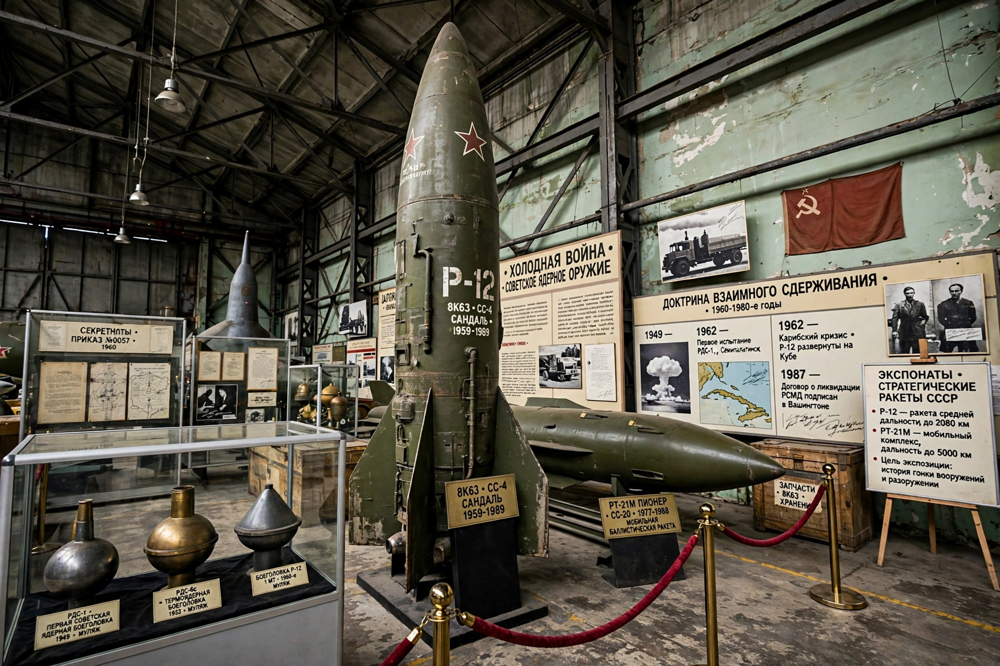

First test: 29 August 1949 (RDS-1)
Last test: 1990
Peak stockpile: About 40,000 warheads (mid-1980s)
The Soviet Union developed nuclear weapons in a crash programme after the Second World War, aided by intelligence on the Manhattan Project, and became the second nuclear power with the RDS-1 test at Semipalatinsk in Kazakhstan in 1949.
Under scientific director Igor Kurchatov and overall administrator Lavrentiy Beria, the programme built closed cities, reactors and weapons laboratories. A thermonuclear device followed in 1953–1955, and the 1961 Tsar Bomba — about 50 megatons — remains the largest weapon ever detonated.
The USSR built a triad of land-based missiles, submarine-launched missiles and bombers, reaching a stockpile of roughly 40,000 warheads at its 1980s peak. Testing occurred mainly at Semipalatinsk and Novaya Zemlya, comparable in role to the US Nevada Test Site.
On dissolution, weapons stationed in Ukraine, Belarus and Kazakhstan were transferred to Russia, the sole nuclear successor state, under the Lisbon Protocol and Budapest Memorandum arrangements.